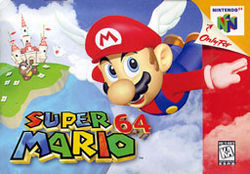

Nintendo 64

Release Date: September 26, 1996
Super Mario 64 took Mario into the 3rd dimension and set the precendet for 3D games at the time. There were many changes as the game transitioned to 3D, but they all worked out in favor of the new game. Once again Mario is out to save Princess Peach from Bowser. Luigi doesn't appear at all in the game and Yoshi only makes a cameo if certain requirements are met. The game once again was well received and sold well. Going back to the game now the visuals are rough, but the gameplay hasn't aged much.
We once again saw only one true Mario game released on the Nintendo 64. There were many off-shoots this time.
- Mario Kart 64
- Mario Tennis
- Mario Golf
- Mario Party
- Mario Party 2
- Mario Party 3
- Super Smash Brothers
- Paper Mario
The Paper Mario game was a 2D/3D hybrid released towards the end of the N64's life. It was different in that combat was turned based like an RPG. It still sold well, but was very different.